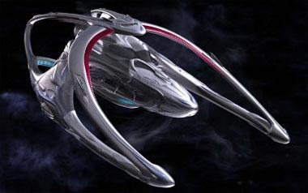
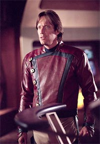
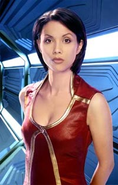
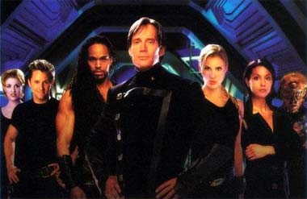
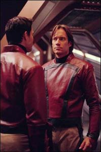
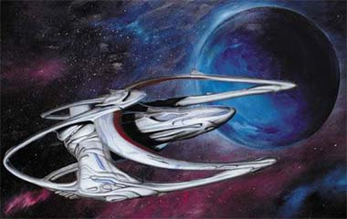

|
por Gustavo Leo
 Ei,
voc! , voc mesmo! Que tal falar um pouco do novo seriado de
fico cientfica baseado na obra de Gene Roddenberry? Ei,
volte aqui, seu covarde! Eu no estou falando de Enterprise,
mas sim de "Gene Roddenberry's Andromeda". Ei,
voc! , voc mesmo! Que tal falar um pouco do novo seriado de
fico cientfica baseado na obra de Gene Roddenberry? Ei,
volte aqui, seu covarde! Eu no estou falando de Enterprise,
mas sim de "Gene Roddenberry's Andromeda".
Eu admito. Quando ouvi falar que a produtora canadense Tribune
estava anunciando mais uma srie baseada em uma idia de
Roddenberry, meu lado ctico logo veio tona. Depois da
tentativa da Tribune em produzir algo de qualidade com
"Terra: Conflito Final" (uma srie que comeou com o p
direito, mas logo se perdeu, graas a conflitos entre produtores,
roteiristas e atores), uma nova srie baseada em parte em "Genesis
II" e "Planet Earth", dois filmes-piloto produzidos
por Roddenberry em 1973 e 1974, no me seduziu em nada. Mais uma
tentativa de Majel Barrett-Roddenberry vender mais material
supostamente criado por seu falecido marido pssaro da galxia,
pensei eu.

A uma coisa estranha aconteceu. Eu cansei de Jornada nas
Estrelas (ou melhor, da pseudo-Jornada nas Estrelas
assinada por Rick Berman e Brannon Braga) que o pobre canal UPN no
cansa em promover como a melhor Jornada de todos os tempos.
Yeah, right. Para comear, Voyager estava encerrando sua
jornada televisiva com episdios bizarros e to ruins que faziam
o terceiro ano da Srie Clssica parecer uma obra-prima.
E Enterprise... bom, Enterprise para mim vem sendo
apenas mais da mesma pobreza de sempre. Um buraco negro de
cronologia e falta de imaginao, com seus reciclados
aparecimentos de Ferengis, holodecks, transmorfos, gatas em roupa
colante e o eterno fetiche de Braga por viagens no tempo e
anomalias, fez com que Jornada nas Estrelas fosse onde
nenhuma de suas sries jamais foi. Se tornou puro clich, uma
pardia de si mesma. Foi-se a poca em que gnios como Piller e
Behr criavam o melhor de A Nova Gerao e Deep Space
Nine para Berman. Bom, no se pode ter tudo. Pelo menos Braga
nao est envolvido com "Nemesis"...
 Mas
estamos aqui para falar de "Andromeda" e no dos
minhas decepes com Berman e Braga. Ento, onde eu estava
mesmo? Ah, sim... bom, de qualquer forma, ao mesmo tempo em que
isso tudo acontecia nos estdios da Paramount, e eu escrevia meus
artigos para o TrekWeb, duas
notcias sobre "Andromeda" me deixaram curioso
sobre a srie. A primeira era que Robert Hewitt Wolfe, um dos
melhores roteristas que DS9 jamais teve, tinha sido
contratado pela Tribune como roteristas-chefe e produtor-
executivo. A segunda notcia que a Tribune anunciava "Andromeda"
como o novo veculo para o ator Kevin Sorbo, o eterno Hrcules.
Sorbo pode ser um canastro assumido, mas seu bom humor e carisma
em "Hrcules" (adoro aquela srie... e "Xena"!)
at que dariam um capito de nave estelar mais humano e herico,
mais na linha de Bill Shatner e seu James T. Kirk. Com isso tudo, "Andromeda"
de repente comeou a parecer uma boa idia para mim. Pedi a um
amigo dos EUA que me enviasse os episdios. O que eu tinha a
perder?
 E
ento que veio a grande decepo. Os primeiros episdios (com
exceo do piloto) no faziam jus premissa da srie. Aps
ser sido trado pelo seu primeiro-oficial, o capito Dylan Hunt
e sua enorme nave estelar, a Andromeda Ascendant, so congelados
no tempo por 300 anos dentro de um buraco negro. Ao serem
resgatados pela nave Eureka Maru, Hunt descobre que sua amada
System Commonheath e sua nobre High Guard (ou melhor, sua
"Federao Unida de Planetas" e sua "Frota
Estelar") deixaram de existir, depois de uma terrvel
guerra. Junto a Andromeda, cuja inteligncia artificial agora
habita um corpo andride (vivido pela sexy e excelente atriz Lexa
Doig) e ao recm-recrutado grupo de tripulantes do Eureka Maru,
Hunt parte na cruzada de reconstruir a Commonheath e restaurar a
paz e a ordem na galxia. Legal, hein?
Bom, depois de um episdio-piloto interessante, mas com pssimos
efeitos especiais e produo capenga, parecia que "Andromeda"
fazia o Star Trash de Brannon Braga uma obra prima da
dramaticidade. Mas o meu desnimo com a atual Jornada nas
Estrelas e a Akiraprise (ok, a ltima vez que eu digo
isso) fez com que eu desse a "Andromeda" uma
segunda (e terceira e quarta) chance.
E, para a minha surpresa, no que "Andromeda"
foi ficando melhor com cada episdio? No melhor estilo de A
Nova Gerao e Deep Space Nine, a srie foi se
definindo como um sucesso extraordinrio no syndication americano
e passou a mostrar roteiros mais bem construdos e originais. A
produo tambm foi melhorada, com efeitos especiais de melhor
qualidade (mas mesmo assim, longe dos sensacionais efeitos
produzidos pela Foundation Imaging para Voyager e Enterprise).
Sorbo e os outros atores se aproveitaram dos bons roteiros para
dar a seus personagens uma boa dose de humanismo e caracterizao,
algo que cai de bom tom com o legado de Roddenberry (e dos
trekkies).

O capito Dylan Hunt est longe de ser um clone futurista de Hrcules,
e grande parte de sua tima caracterizao vem do carisma de
Sorbo, que realmente investiu seu tempo e suor para construir um
personagem ao mesmo tempo herico e humano (ouviu isso, Bakula?).
 Mas
nem tudo vai bem no universo de "Andromeda".
Parece que, afinal de contas, se mexe em time que est ganhando.
No meio de uma tima segunda temporada, Sorbo resolveu mexer seus
msculos (que no so poucos, em todos os sentidos) e assumir
de vez seu papel como produtor. Ele forou a Tribune a despedir
Hewitt Wolfe e dar um contedo de mais ao e aventura a srie,
eliminando o arco de episdios sobre a "volta da
Commonhealth", ou seja, toda a premissa que Wolfe vinha
desenvolvendo para a srie.
A personagem Trance Gemini sofreu uma mudana radical e o
personagem Rev Bem foi cortado da srie, tudo numa tentativa de
transformar o universo dark de "Andromeda" em
algo mais sedutor para o pblico.
Se a srie vai manter sua qualidade na terceira temporada ou
simplesmente se tornar "Hrcules no espao", no se
pode dizer ainda. Ainda assim, bom saber que ainda existem sries
como "Andromeda", "Stargate SG-1" e
"Farscape", onde a magia da fronteira final permanece
acesa.
Parabns, Mr. Roddenberry.

|